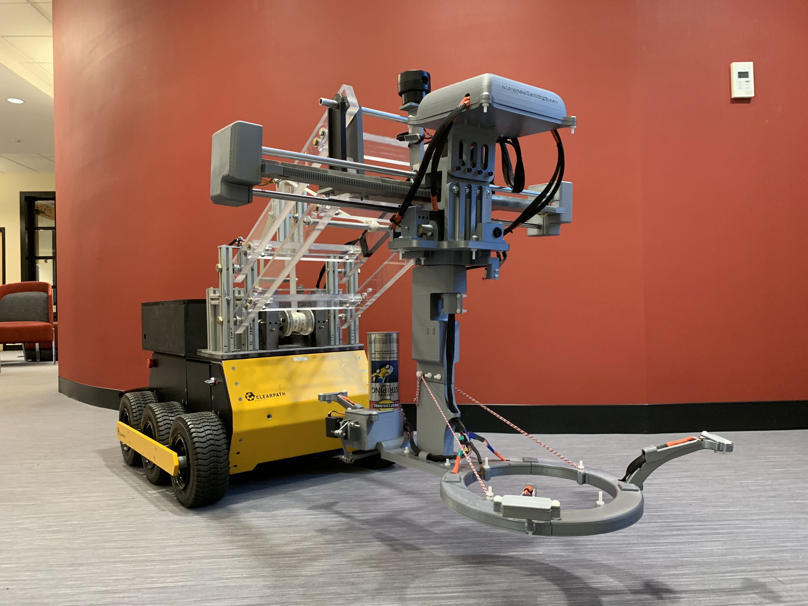
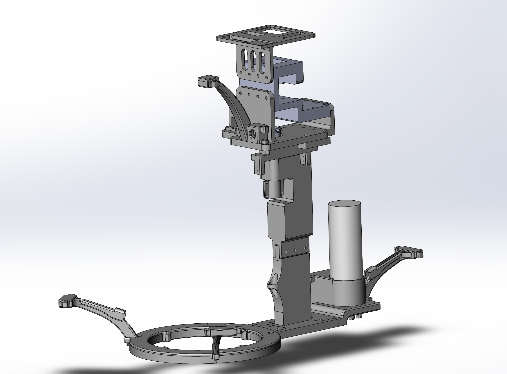

Major Qualifying Project - Autonomous Landmine Detection Rover

My Major Qualifying Project at WPI was to design an autonomous rover capable of detecting landmines with small amounts of metal
and physically mark them on the ground so that an octocopter drone could drop a sandbag on it to detonate. The goal between this rover
and the flying drone was to remove human and animal operators from the minefields, automating the entire process from searching to removal
of landmines. This page will summarize my contributions to the project. The report with full details can be downloaded by the link posted
at the bottom of the page.
Sensor Arm
My main contribution to the project was the creation of the Sensor Arm, housing all of the sensors for landmine detection and the marking
system. The main landmine detection sensor was the metal detector located inside the ring shown in the image below. The linear slide
that the sensor arm is attached to allows for the metal detector to be swept across the front of the rover. The metal detector could detect 1g
of metal at depths less than 3 inches which was a project goal since the landmines we were targeting were typically buried at
shallow depths. An infrared camera was tested to operate alongside the metal detector, with the hope that the rover would be able to distiguish
between a landmine and metal debri. Unfortunately, the infrared camera was only effective at seeing landmines that were buried with a thin layer
of dirt and only at times at the day where the ground was being heated or cooled. The camera was eventually removed from the design due to this and other
complications communicating with it over long data cables.Ultrasonic sensors were used on the sensor arm for sensing the environment. Three ultrasonic sensors were pointed at the ground to
detect changes in height of the ground. The four-bar mechanism used the data from these sensors to keep the metal detector approximately one inch
above the ground. An ultrasonic sonar was used pointing in front of the robot for detecting obstacles like trees, bushes and large rocks. This sensor was
tested and found capable of detecting these obstacles but software to avoid these obstacles was not implemented due to time constraints. The final component of the sensor arm is the marking system. A stripping spray paint can is located behind the metal detector, capable of creating a straight
line of paint. When a landmine is detected, the spray can and metal detector are rotated, swapping places, positioning the spray can directly over
the landmine. A servo actuates the spray can nozzle and the robot then drives backward about 6 inches to create a square mark. This is shown in the
team-made video below. Please note that the spray can was intentionally loaded upside down so that it would not spray paint for our test since we
were in a public park.The sensor arm was controlled by two arduino controllers, one converting the audio output of the metal detector into a digital form,
for further processing on a raspberry pi, and the other arduino being used to control the marking system and read in the ultrasonic sensor data.
In summary, I designed the mechanical components shown in the CAD model below, configured the electronics and wrote all of the software on the arduinos.

Raspberry Pi Programming
The sensor arm communicated with a raspberry pi located in the black box of the rover. This raspberry pi was on a network along with another
computer on-board the rover and a laptop used to connect to the rover remotely and send it coordinates of a minefield to scan. The software was written modularly so that it could be
tested in parts and then combined using ROS (Robot Operating System). I wrote most of the
the modules for communicating with the sensor arm and the main computer on the rover. The modules that contolled
the linear slide and four bar mechanism was mainly written by other members of the team but I had a large role aiding them in completion of them. All of these
modules worked together to raise and lower the sensor arm to avoid bumps in the ground while also sweeping the metal detector across the front
of the rover, coordinating with the navigation software running on the main computer.
The school interviewed us and created a video shown below.
The team produced a short video for project presentation day shown below.